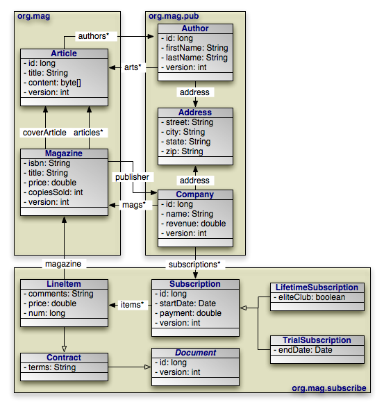

2.5. Metadata
JPA requires that you accompany each persistent class with persistence metadata. This metadata serves three primary purposes:
-
To identify persistent classes.
-
To override default JPA behavior.
-
To provide the JPA implementation with information that it cannot glean from simply reflecting on the persistent class.
Persistence metadata is specified using either the Java annotations defined in the jakarta.persistence package, XML mapping files, or a mixture of both.
In the latter case, XML declarations override conflicting annotations.
If you choose to use XML metadata, the XML files must be available at development and runtime, and must be discoverable via either of two strategies:
-
In a resource named orm.xml placed in a META-INF directory within a directory in your classpath or within a jar archive containing your persistent classes.
-
Declared in your persistence.xml configuration file. In this case, each XML metadata file must be listed in a
mapping-fileelement whose content is either a path to the given file or a resource location available to the class' class loader.
We describe the standard metadata annotations and XML equivalents throughout this chapter. The full schema for XML mapping files is available in XML Schema. JPA also standardizes relational mapping metadata and named query metadata, which we discuss in Mapping Metadata and Named Queries respectively.
|
|
OpenJPA defines many useful annotations beyond the standard set. See Additional JPA Metadata and Metadata Extensions in the Reference Guide for details. There are currently no XML equivalents for these extension annotations. |
|
|
Persistence metadata may be used to validate the contents of your entities prior to communicating with the database. This differs from mapping meta data which is primarily used for schema generation. For example if you indicate that a relationship is not optional (e.g. @Basic(optional=false)) OpenJPA will validate that the variable in your entity is not null before inserting a row in the database. |

Through the course of this chapter, we will create the persistent object model above.